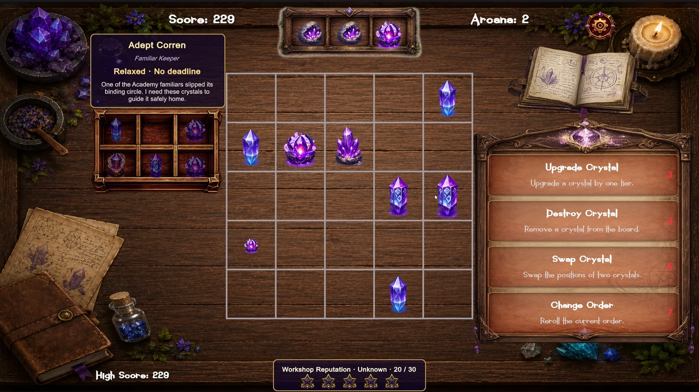

B.Sc. in Computer Engineering
Bar-Ilan University
GAME DEVELOPMENT
Unity Developer
Computer Engineering graduate currently focused on game development with Unity and C#, particularly gameplay mechanics, systems, and architecture.
01 / SELECTED WORK

Unity · C# · Merge Game Prototype
Merge Alchemy is a Unity merge-game prototype developed as part of an Intermediate Unity Development course. Players manage an alchemical workshop, merging crystals, completing customer orders, and earning currency and reputation to unlock new gameplay mechanics.
Designed the game concept, mechanics, and progression; defined implementation requirements, directed architectural decisions, and tested and refined the resulting systems. All production code was written by AI coding agents under my direction.
02 / TECHNICAL SKILLS
Experience teaching C and C++ through private programming instruction.
03 / EDUCATION
Bar-Ilan University
SBS Games – School
HandsOnGames